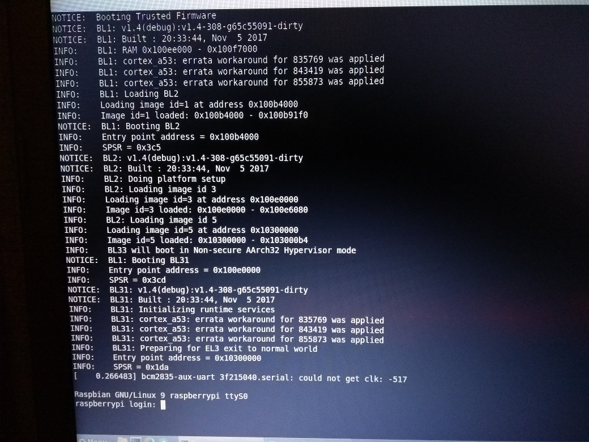

This is a small project I worked on before Christmas. The Trusted Firmware-A is a reference implementation of a secure firmware for ARMv8-A CPUs. It has ports to both AArch64 (64-bit Arm Instruction Set Architecture) and AArch32 (32-bit Arm ISA). AArch32 is almost the same as ARMv7-A, for backwards compatibility.
The SoC of the Raspberry Pi 3 is the Broadcom BCM2937, which has 4 Cortex-A53 cores. The Cortex-A53 is a microarchitecture that implements the ARMv8-A ISA with both 64 and 32-bit modes, so it is possible to port the Trusted Firmware-A. At work I'm one of the engineers working on the Trusted Firmware-A, and I really like the Raspberry Pi, so I simply couldn't resist, I needed to have the Trusted Firmware running on it.
Even though the Trusted Firmware has ports to both AArch64 and AArch32, the one that interests me is AArch64. There is no real advantage for making the port for Raspberry Pi run in AArch32 mode. The firmware runs in EL3, the highest privilege execution level. The architecture allows to downgrade from 64 to 32-bit when reducing the privilege level, but not to increase it. That means that, for example, if the firmware is running in 64-bit mode, it is possible to have a 64 or a 32-bit hypervisor in EL2. Similarly, an operating system in 64-bit mode in EL1 can execute both 64 and 32-bit user applications in EL0. In short, a 64-bit firmware allows any other privilege level to use 64 or 32-bit mode, but a 32-bit firmware would restrict them to execute in 32-bit mode.
Also, it is important that this port works with Raspbian. It is the Linux distribution for the Raspberry Pi with the best support, as it has the support of the Raspberry Pi Foundation itself. If a port of the Trusted Firmware is to be done, it's a good idea to make it work with Raspbian.
This port is based on the work of Ard Biesheuvel (@ardbiesheuvel), explained in this article. The port is in this repository. The port has been heavily modified. For starters, that port didn't manage to boot Linux or to release the secondary CPUs from their wait loop (the RAM used as a mailbox wasn't initialized to 0 before entering the wait loop).
Important note: Even though the Trusted Firmware-A is a reference of a secure boot flow, the Raspberry Pi 3 doesn't isn't a secure platform. The memory available to the CPUs is the DRAM, which can be accessed when the CPU is in Non-secure and Secure modes. However, in order to emulate the normal bootflow, the memory map is divided in a few regions.
In short, this is a port that can be used to play around with, implement standard services that the OS can use, etc. This is not meant to be used to implement secure services in any way.
It could be possible to emulate secure RAM by using the hypervisor translation tables to hide some memory from the OS, which would act as SRAM. This is non-trivial, and it is outside of the scope of this project.
Getting the Trusted Firmware-A to boot
First of all, I connected a UART to USB cable to the Mini UART located in the
pin header. I verified that the connection was working by using screen to
connect to Linux through it. To enable this connection, the file config.txt
on the root of the SD card must contain a line that says enable_uart=1.
Also, I added console=serial0,115200 console=tty1 to the file
cmdline.txt. Once I verified that it was working, I started to take a look
at the code of the port.
The port was quite old by the time I started to work on this project, so the first thing that I did was to rebase the branch, replace some old APIs and libraries by the new ones, and made sure that it compiled. I also enabled some CPU errata workarounds that can affect the Cortex-A53. Then, I had to figure out how to make it run. I needed to get all CPU cores running the same binary at EL3 in AArch64 mode.
The booting process of the Raspberry Pi is quite unusual. The SoC has a VideoCore IV located between all the Arm cores and the DRAM. It has its own MMU and tricks the Arm cores into thinking that the physical memory map is different than it actually is! This VideCore is also the one that has a ROM bootloader that loads the rest of the files from the SD card. The file config.txt tells it how to load them, but most of the options of interest to this project are undocumented. After some googling I managed to find the ones I needed and got all 4 cores booting in AArch64 mode in EL3. For more details about it, check the documentation of the port in the official repository of the Trusted Firmware:
https://github.com/ARM-software/arm-trusted-firmware/blob/master/docs/plat/rpi3.rst
In short, the kernel has to be renamed to kernel8.img and the firmware has to be packaged as one single binary and named armstub8.bin. Then, in the config.txt file I added the following lines to tell the loader where to load the files in DRAM.
enable_uart=1 kernel_address=0x01000000 device_tree_address=0x02000000
One good thing about this unusual bootflow is that it is literally impossible to brick the Raspberry Pi, you just need to write the correct files to your SD card and it will boot again. Also, it gives the user a lot of flexibility on how to boot the Arm cores. Normally it's not that simple to select AArch64 or AArch32 at the highest Execution Level, that's fixed by the platform. In the Raspberry Pi, that can be changed by changing a value in the configuration file.
This demo by Stephen Warren was useful to test that my code was running in the conditions I needed. That demo shows the same message per each CPU with the values of some registers, like CurrentEL, that shows the EL in which the code is running.
Once this was ready, I just needed to replace that demo by my binary of the firmware and check if the port was working. I decided to use the binary of the demo BL33 image, the final payload to be loaded by the firmware, where it jumps after initializing everything. I got the following output:
VERBOSE: Reserved 0x12000 bytes (discarded 0x7000 bytes above) VERBOSE: Trusted SRAM seen by this BL image: 181000 - 0x200000 VERBOSE: Code region: 0 - 0x5f90 ERROR: mmap_add_region_check() failed. error -22 ASSERT: lib/xlat_tables_v2/xlat_tables_internal.c:753:0
Success! Sort of, anyway. That error is EINVAL. It means that there is some sort of overlap of memory regions, or that the platform is trying to map regions with invalid values for some reason. I initially thought that it was just that there wasn't enough memory reserved to setup the translation tables. Anyway, easy enough to fix! I eventually got this output:
NOTICE: Booting Trusted Firmware NOTICE: BL1: v1.4(debug):v1.4-308-g2082b0ad NOTICE: BL1: Built : 02:47:22, Nov 4 2017 INFO: BL1: RAM 0x3ee000 - 0x3f7000 INFO: BL1: cortex_a53: errata workaround for 835769 was applied INFO: BL1: cortex_a53: errata workaround for 843419 was applied INFO: BL1: cortex_a53: errata workaround for 855873 was applied INFO: BL1: Loading BL2 INFO: Loading image id=1 at address 0x3b4000 INFO: Image id=1 loaded: 0x3b4000 - 0x3ba1f0 NOTICE: BL1: Booting BL2 INFO: Entry point address = 0x3b4000 INFO: SPSR = 0x3c5 NOTICE: BL2: v1.4(debug):v1.4-308-g2082b0ad NOTICE: BL2: Built : 02:47:22, Nov 4 2017 INFO: BL2: Doing platform setup INFO: BL2: Loading image id 3 INFO: Loading image id=3 at address 0x3e0000 INFO: Image id=3 loaded: 0x3e0000 - 0x3e8080 INFO: BL2: Loading image id 5 INFO: Loading image id=5 at address 0x600000 INFO: Image id=5 loaded: 0x600000 - 0x6003f4 NOTICE: BL1: Booting BL31 INFO: Entry point address = 0x3e0000 INFO: SPSR = 0x3cd NOTICE: BL31: v1.4(debug):v1.4-308-g2082b0ad NOTICE: BL31: Built : 02:47:22, Nov 4 2017 INFO: BL31: Initializing runtime services INFO: BL31: cortex_a53: errata workaround for 835769 was applied INFO: BL31: cortex_a53: errata workaround for 843419 was applied INFO: BL31: cortex_a53: errata workaround for 855873 was applied INFO: BL31: Preparing for EL3 exit to normal world INFO: Entry point address = 0x600000 INFO: SPSR = 0x3c9 Hello, world! this_cpuid:0 MPIDR:0000000080000000 r0:0000000000000000 r1:0000000000000000 r2:0000000000000000 r3:0000000000000000 CurrentEL:8 SPSel:1
The exception level is encoded in bits 3 and 2 of register CurrentEL, which means that this code is running at EL2, as we want! As you can see, the demo only prints the registers of one CPU. This is normal, as all secondary cores are supposed to wait for the OS to power them ON (or, in this case, release them from a wait loop).
Getting Linux to boot
The next step was to actually get the Linux kernel booting. The Linux kernel image simply replaces the demo I was using as BL33 image.
I didn't have a 64-bit kernel to test with, though, just a 32-bit one (the one that comes with Raspbian). According to the Linux boot documentation for the Arm 32-bit kernel (located in Documentation/arm/Booting in the Linux kernel tree), it likes to start in Hypervisor mode. I just needed to tweak the final step of the firmware (the jump to the BL33 entrypoint) so that it jumped to this mode instead of EL2 in AArch64 mode.
This is easy, it is only needed to modify the value of SPSR at the time it jumps to BL33. With the correct value, it jumps to the entrypoint in AArch32 in hypervisor mode. I didn't want to close the door to a 64-bit kernel, so I just created a build option, RPI3_BL33_IN_AARCH32, that would let the developer choose EL2 in AArch64 or Hypervisor in AArch32.
NOTICE: Booting Trusted Firmware NOTICE: BL1: v1.4(debug):v1.4-310-gf49906c8-dirty NOTICE: BL1: Built : 23:55:50, Nov 4 2017 NOTICE: BL1: Booting BL2 NOTICE: BL2: v1.4(debug):v1.4-310-gf49906c8-dirty NOTICE: BL2: Built : 23:55:50, Nov 4 2017 NOTICE: BL1: Booting BL31 NOTICE: BL31: v1.4(debug):v1.4-310-gf49906c8-dirty NOTICE: BL31: Built : 23:55:50, Nov 4 2017 [ 1.060413] CPU1: failed to come online [ 2.101140] CPU2: failed to come online [ 3.141884] CPU3: failed to come online [ 3.327640] bcm2835-aux-uart 3f215040.serial: could not get clk: -517 Raspbian GNU/Linux 9 raspberrypi ttyS0 raspberrypi login:
The secondary cores couldn't come online because this kernel doesn't know about PSCI, which is the standard way of powering on Arm cores. But that's not a problem, there is a workaround, the kernel also has support for booting secondary cores by making them wait in a wait loop.
Getting the secondary cores to work
The port I used as a base already had an implementation of the SMC (System Monitor Call) PSCI_CPU_ON that made the secondary cores wait in a loop until it was called, at which point it released them and jumped to the given address.
Unfortunately, this can't work with the kernel if it doesn't know about PSCI, and that was trickier that I expected. In the end, I decided to simply add some glue code by creating a small bootstrap that would be used as BL33 image and run in EL2. It would act like a really simple UEFI or U-Boot. The idea is to use this bootstrap to release the locks from the firmware by calling PSCI_CPU_ON and make them wait in a wait loop that uses the mailbox that Raspbian knows how to use to boot the secondary cores. I didn't really know how to do this, so I just checked how it is done in the official distribution of Raspbian. The following 2 links contain the bootstraps for a 32-bit kernel and a 64-bit kernel respectively:
https://github.com/raspberrypi/tools/blob/master/armstubs/armstub7.S
https://github.com/raspberrypi/tools/blob/master/armstubs/armstub8.S
armstub7.S is used by the Raspberry Pi 2, which has 4 Cortex-A7, but also by the Raspberry Pi 3 when booting a 32-bit kernel, and it has 4 Cortex-A53. armstub8.S is used by the Raspberry Pi 3 when booting a 64-bit kernel. The compiled bootstraps are embedded on one of the elf files that are loaded by the VideoCore at boot.
After some reverse engineering I created my own versions of the bootstraps:
https://github.com/AntonioND/rpi3-arm-tf-bootstrap
As a side effect of my reverse engineering efforts, I checked the Technical Reference Manuals of the Cortex-A53 and Cortex-A7 and found some really small bugs in the official bootstrap for the 32-bit kernel. I created a pull request to fix them:
https://github.com/raspberrypi/tools/pull/85
However... After all that effort, the secondary cores still refused to work. I decided to resort to printf-powered debugging and found out that the cores were actually crashing before the kernel had had the chance to claim them. It took me some time to understand the reason. Again, Documentation/arm/Booting had the answer: The kernel copies itself to a different memory region at boot:
The zImage may also be placed in system RAM and called there. The kernel should be placed in the first 128MiB of RAM. It is recommended that it is loaded above 32MiB in order to avoid the need to relocate prior to decompression, which will make the boot process slightly faster.
During this copy, the code of my waitloop was being overwritten. I checked that moving the firmware to a location far away fixed the problem, but now I really needed to find a way to protect he memory region used by the firmware. The whole point of BL31 is to have some services that can be used by the operating system. If Linux is free to use the memory used by the firmware, this can't work.
I eventually found out the solution: To add memmap=256M$16M to the file
cmdline.txt. This option tells the kernel that at the address 256 MiB there
are 16 MiB that it shouldn't use, even if that range of memory contains valid
ram specified in the device tree that tells it about all the hardware in the
system.
NOTICE: Booting Trusted Firmware NOTICE: BL1: v1.4(debug):v1.4-308-g65c55091-dirty NOTICE: BL1: Built : 20:33:44, Nov 5 2017 NOTICE: BL1: Booting BL2 NOTICE: BL2: v1.4(debug):v1.4-308-g65c55091-dirty NOTICE: BL2: Built : 20:33:44, Nov 5 2017 NOTICE: BL1: Booting BL31 NOTICE: BL31: v1.4(debug):v1.4-308-g65c55091-dirty NOTICE: BL31: Built : 20:33:44, Nov 5 2017 [ 0.266483] bcm2835-aux-uart 3f215040.serial: could not get clk: -517 Raspbian GNU/Linux 9 raspberrypi ttyS0 raspberrypi login: pi Password: Last login: Sun Nov 5 20:41:18 GMT 2017 on tty1 Linux raspberrypi 4.9.41-v7+ #1023 SMP Tue Aug 8 16:00:15 BST 2017 armv7l The programs included with the Debian GNU/Linux system are free software; the exact distribution terms for each program are described in the individual files in /usr/share/doc/*/copyright. Debian GNU/Linux comes with ABSOLUTELY NO WARRANTY, to the extent permitted by applicable law. pi@raspberrypi:~$ cat /proc/cpuinfo processor : 0 model name : ARMv7 Processor rev 4 (v7l) BogoMIPS : 38.40 Features : half thumb fastmult vfp edsp neon vfpv3 tls vfpv4 idiva idivt vfpd32 lpae evtstrm crc32 CPU implementer : 0x41 CPU architecture: 7 CPU variant : 0x0 CPU part : 0xd03 CPU revision : 4 processor : 1 model name : ARMv7 Processor rev 4 (v7l) BogoMIPS : 38.40 Features : half thumb fastmult vfp edsp neon vfpv3 tls vfpv4 idiva idivt vfpd32 lpae evtstrm crc32 CPU implementer : 0x41 CPU architecture: 7 CPU variant : 0x0 CPU part : 0xd03 CPU revision : 4 processor : 2 model name : ARMv7 Processor rev 4 (v7l) BogoMIPS : 38.40 Features : half thumb fastmult vfp edsp neon vfpv3 tls vfpv4 idiva idivt vfpd32 lpae evtstrm crc32 CPU implementer : 0x41 CPU architecture: 7 CPU variant : 0x0 CPU part : 0xd03 CPU revision : 4 processor : 3 model name : ARMv7 Processor rev 4 (v7l) BogoMIPS : 38.40 Features : half thumb fastmult vfp edsp neon vfpv3 tls vfpv4 idiva idivt vfpd32 lpae evtstrm crc32 CPU implementer : 0x41 CPU architecture: 7 CPU variant : 0x0 CPU part : 0xd03 CPU revision : 4 Hardware : BCM2835 Revision : a02082 Serial : 000000001528876b pi@raspberrypi:~$ sudo shutdown now [ 64.551587] reboot: Power down
And a photo I took to commemorate the moment. :)
At last, everything was working! Linux could detect all 4 cores! All I needed to do now is to make sure that my port would also work with a 64-bit kernel, but... well, I didn't have any 64-bit kernel and I didn't know where to get one from. I ended up compiling my own.
Getting a 64-bit kernel to work
It is really simple, actually, you just have to clone the Linux tree fork maintained by the Raspberry Pi Foundation and compile it for 64-bit:
git clone --depth=1 -b rpi-4.14.y https://github.com/raspberrypi/linux cd linux make ARCH=arm64 CROSS_COMPILE=aarch64-linux-gnu- bcmrpi3_defconfig make -j 6 ARCH=arm64 CROSS_COMPILE=aarch64-linux-gnu-
Then, copy the kernel image and the device tree to the SD card.
cp arch/arm64/boot/Image /path/to/boot/kernel8.img cp arch/arm64/boot/dts/broadcom/bcm2710-rpi-3-b.dtb /path/to/boot/
Finally, install the kernel modules.
make ARCH=arm64 CROSS_COMPILE=aarch64-linux-gnu- \ INSTALL_MOD_PATH=/path/to/filesystem modules_install
I also had to create a bootstrap in a similar way as I did for the 32-bit kernel. It was easier now, though. All the booting information is in the file Documentation/arm64/booting.txt, like with the 32-bit kernel.
After a bit of work, I finally got the kernel booting and releasing all secondary cores from their loops! The console output for this kernel, however, is really verbose, so I've cut significant parts of it:
NOTICE: Booting Trusted Firmware NOTICE: BL1: v1.4(debug):v1.4-331-gac96a37f NOTICE: BL1: Built : 22:59:37, Nov 13 2017 NOTICE: BL1: Booting BL2 NOTICE: BL2: v1.4(debug):v1.4-331-gac96a37f NOTICE: BL2: Built : 22:59:37, Nov 13 2017 NOTICE: BL1: Booting BL31 NOTICE: BL31: v1.4(debug):v1.4-331-gac96a37f NOTICE: BL31: Built : 22:59:37, Nov 13 2017 [ 0.000000] Booting Linux on physical CPU 0x0 [ 0.000000] Linux version 4.14.0-rc8-v8+ (antonio@antonio-debian-laptop) (gcc version 7.1.1 20170707 (Linaro GCC 7.1-2017.08)) #1 SMP PREEMPT Sun Nov 12 19:55:59 GMT 2017 [ 0.000000] Boot CPU: AArch64 Processor [410fd034] [ 0.000000] Machine model: Raspberry Pi 3 Model B Rev 1.2 [ 0.000000] efi: Getting EFI parameters from FDT: [ 0.000000] efi: UEFI not found. [ 0.000000] cma: Reserved 8 MiB at 0x000000003ac00000 [ 0.000000] random: fast init done [ 0.000000] percpu: Embedded 22 pages/cpu @ffffffe77ab7e000 s50456 r8192 d31464 u90112 [ 0.000000] Detected VIPT I-cache on CPU0 [ 0.000000] CPU features: enabling workaround for ARM erratum 845719 [ 0.000000] Built 1 zonelists, mobility grouping on. Total pages: 238896 [ 0.000000] Kernel command line: 8250.nr_uarts=1 bcm2708_fb.fbwidth=656 bcm2708_fb.fbheight=416 bcm2708_fb.fbswap=1 vc_mem.mem_base=0x3ec00000 vc_mem.mem_size=0x40000000 dwc_otg.lpm_enable=0 console=ttyS0,115200 console=tty1 root=PARTUUID=5cd2ad4c-02 rootfstype=ext4 elevator=deadline fsck.repair=yes rootwait memmap=256M$16M [ 0.000000] PID hash table entries: 4096 (order: 3, 32768 bytes) [ 0.000000] Dentry cache hash table entries: 131072 (order: 8, 1048576 bytes) [ 0.000000] Inode-cache hash table entries: 65536 (order: 7, 524288 bytes) [ 0.000000] Memory: 930484K/970752K available (6972K kernel code, 884K rwdata, 2304K rodata, 2624K init, 697K bss, 32076K reserved, 8192K cma-reserved) ... several lines of output ... [ 0.012143] smp: Bringing up secondary CPUs ... [ 0.019337] Detected VIPT I-cache on CPU1 [ 0.019402] CPU1: Booted secondary processor [410fd034] [ 0.026438] Detected VIPT I-cache on CPU2 [ 0.026480] CPU2: Booted secondary processor [410fd034] [ 0.033553] Detected VIPT I-cache on CPU3 [ 0.033594] CPU3: Booted secondary processor [410fd034] [ 0.033729] smp: Brought up 1 node, 4 CPUs [ 0.033857] SMP: Total of 4 processors activated. [ 0.033885] CPU features: detected feature: 32-bit EL0 Support [ 0.034111] CPU: All CPU(s) started at EL2 [ 0.034160] alternatives: patching kernel code ... several lines of output ... Raspbian GNU/Linux 9 raspberrypi ttyS0 raspberrypi login: pi Password: Last login: Thu Sep 7 16:23:37 UTC 2017 on ttyS0 Linux raspberrypi 4.14.0-rc8-v8+ #1 SMP PREEMPT Sun Nov 12 19:55:59 GMT 2017 aarch64 The programs included with the Debian GNU/Linux system are free software; the exact distribution terms for each program are described in the individual files in /usr/share/doc/*/copyright. Debian GNU/Linux comes with ABSOLUTELY NO WARRANTY, to the extent permitted by applicable law. pi@raspberrypi:~$ uname -a Linux raspberrypi 4.14.0-rc8-v8+ #1 SMP PREEMPT Sun Nov 12 19:55:59 GMT 2017 aarch64 GNU/Linux pi@raspberrypi:~$ cat /proc/cpuinfo processor : 0 BogoMIPS : 38.40 Features : fp asimd evtstrm crc32 cpuid CPU implementer : 0x41 CPU architecture: 8 CPU variant : 0x0 CPU part : 0xd03 CPU revision : 4 processor : 1 BogoMIPS : 38.40 Features : fp asimd evtstrm crc32 cpuid CPU implementer : 0x41 CPU architecture: 8 CPU variant : 0x0 CPU part : 0xd03 CPU revision : 4 processor : 2 BogoMIPS : 38.40 Features : fp asimd evtstrm crc32 cpuid CPU implementer : 0x41 CPU architecture: 8 CPU variant : 0x0 CPU part : 0xd03 CPU revision : 4 processor : 3 BogoMIPS : 38.40 Features : fp asimd evtstrm crc32 cpuid CPU implementer : 0x41 CPU architecture: 8 CPU variant : 0x0 CPU part : 0xd03 CPU revision : 4 pi@raspberrypi:~$ sudo shutdown now ... several lines of output ... [ 78.768742] reboot: Power down
The final thing to do was to write the documentation of this port and to create a pull request:
https://github.com/ARM-software/arm-trusted-firmware/pull/1157
It was reviewed and merged, and now the Trusted Firmware-A has an upstream port for the Raspberry Pi 3! It was a pretty interesting project, I learned a lot about the Linux kernel boot process and about the kind of problems that people that do the bringup of a platform have to face.
I hope you found this article interesting!
Update
As of 2018-03-23, the name of the project is Trusted Firmware-A. All references to Arm Trusted Firmware have been replaced by the new name.